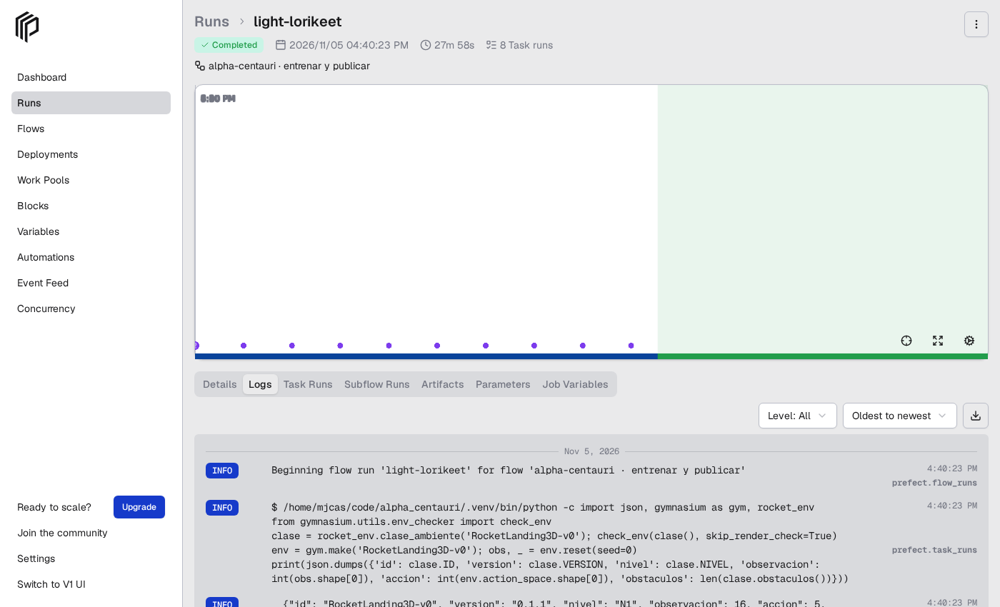

Pipeline orquestado (Prefect)
entrenar_publicar.py lleva una configuración nueva desde el entrenamiento hasta el catálogo servido, en ocho etapas
con criterio de aceptación. Cada etapa es un comando del proyecto (los mismos que se usan a mano), ejecutado por Prefect,
que registra el estado, la duración y los logs de cada una.
| # | Etapa | Qué hace | Falla si… |
|---|---|---|---|
| 1 | validar | check_env del ambiente del nivel, versión y nivel, suite v1 presente, estado de git |
el ambiente no cumple el contrato de Gymnasium o la suite no es la esperada |
| 2 | probar | pytest tests/test_ambiente.py tests/test_ambiente_n2.py |
alguna prueba del contrato falla |
| 3 | entrenar | python cli.py entrenar-ppo --ambiente … --seed … --run-id … (--desde para transferencia); con --run-existente se salta |
el entrenamiento termina con error |
| 4 | evaluar | python panel.py: suite v1, 200 épocas normales y 200 con viento de 15 m/s → evaluacion.json |
— |
| 5 | registrar | configs/<id>.json (hipótesis, cambio, baseline, presupuesto), manifests/<id>.json (sección 11), etiquetas en MLflow, cli.py verificar (SHA-256) |
las huellas no coinciden |
| 6 | decidir | compara con el recomendado actual del nivel: acepta si gana ≥ 2 puntos de tasa, no pierde más de 5 con viento y (nivel 2) no choca más; escribe estado y decisión en configs/ y MLflow |
— (rechazar no es fallar) |
| 7 | publicar | si se aceptó, catalogo.py recomendar; commit con ejecución, configs, manifests, catálogo, MLflow y evidencia; con --push, push (dispara Render y Vercel) |
git falla |
| 8 | comprobar | con push: espera a que GET /version de la API pública sirva el commit, comprueba el recomendado del nivel en /catalogo y hace una evaluación corta; sin push: lo mismo contra la API en local |
la API no sirve el commit en el tiempo dado o sirve otro catálogo → rollback con python catalogo.py restaurar --nivel … |
La evidencia de cada ejecución queda en ejecuciones/<run_id>-<fecha>.json (resultado de cada etapa, decisión, commit,
id del flow run de Prefect) y se versiona en git. La interfaz de Prefect se abre con .venv-prefect/bin/prefect server start
(http://127.0.0.1:4200; entra por la raíz y navega a Runs, los enlaces profundos devuelven 404) y muestra los flow runs con sus tareas, tiempos y logs.
Los flujos que se ejecutan sin servidor levantan uno efímero y guardan sus runs en la misma base de datos (~/.prefect), así que aparecen igual.

Entorno
Prefect 3.8 no convive con la versión de FastAPI que usa la API (0.162: quitó Body(min_items=)), y su interfaz necesita FastAPI ≥ 0.139 (FastAPI.frontend); la 0.139.1 cumple las dos. Por eso el orquestador tiene su propio entorno:
python -m venv .venv-prefect && .venv-prefect/bin/pip install -r requirements-pipeline.txt
Las etapas se ejecutan con el intérprete del proyecto (.venv/bin/python, o la variable ALPHA_PYTHON).
Uso
# ensayo sin tocar git, con una ejecución ya entrenada (comprueba la API en local)
.venv-prefect/bin/python pipelines/entrenar_publicar.py --run-existente ppo-n2-transfer-1m5-v0.2-s0 --sin-commit
# ejecución real: entrena, decide, publica y comprueba la API pública
.venv-prefect/bin/python pipelines/entrenar_publicar.py --ambiente RocketLanding3D-v0 --seed 1 --run-id ppo-v2-v0.1-s1 \
--baseline ppo-v2-v0.1-s0 --hipotesis "…" --cambio "…" --push
# nivel 2 con transferencia desde el modelo del nivel 1
.venv-prefect/bin/python pipelines/entrenar_publicar.py --ambiente RocketLanding3D-N2-v0 --seed 1 --run-id ppo-n2-transfer-1m5-v0.2-s1 \
--desde ppo-v2-v0.1-s0 --total-timesteps 1500000 --baseline ppo-n2-transfer-1m5-v0.2-s0 --hipotesis "…" --push
Variables: ALPHA_API_URL (API pública, por defecto https://alpha-centauri-api.onrender.com), --espera-api (segundos máximos
para que el despliegue sirva el commit, 900 por defecto).
Criterio de aceptación
Un candidato sustituye al recomendado de su nivel solo si en la suite v1 gana al menos 2 puntos de tasa de aterrizaje, con
viento de 15 m/s no pierde más de 5 puntos respecto al recomendado y, en el nivel 2, no tiene más colisiones. Si no lo cumple
queda rechazado (con su evidencia versionada, igual que los aceptados). Si no hay recomendado en el nivel, se acepta.
Las constantes están al principio de entrenar_publicar.py.
Rollback
El catálogo guarda el anterior de cada nivel. python catalogo.py restaurar --nivel N1 --motivo "…" + commit + push devuelve
la versión anterior; la etapa 8 (o GET /version) comprueba qué commit y qué catálogo sirve la API.